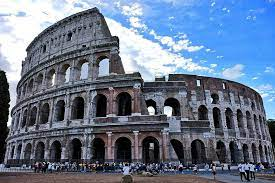

برج بيزا المائل

يقع برج بيزا في إيطاليا بمدينة بيزا في ولاية توسكانا، بدأ بنائه عام 1173 ميلادية، ودام بنائه 199 عامًا، وعُرف باسم برج بيزا المائل لوجود ميلان به وانحراف عن المستوى العمودي. يتكون من ثمانية طوابق مبنية من الرخام الأبيض على الطراز الروماني بارتفاع 56,2 متر وبه درج مبني داخل الجدران يتألف من 294 درجة، (مجهز حاليًا بمصعد كهربائي)
الكولوسيوم

هو مدرج روماني عملاق يقع في وسط مدينة روما، تم تشييده إلى شرق المنتدى الروماني، ويرجع تاريخ بنائه إلى عهد الإمبراطورية الرومانية في القرن الأول فيما بين عامي 70 و72 بعد الميلاد تحت حكم الإمبراطور فلافيو فسبازيان
تم بناء المدرج الأكبر في العالم من الخرسانة والحجارة، ويعد المدرج بمثابة العمل الأكبر الذي شيدته الإمبراطورية الرومانية، حيث يعتبر واحدًا من أعظم الأعمال المعمارية والهندسية الرومانية. وطُبعت صورة الكولوسيوم على قطعة الخمس سنتات من النسخة الإيطالية
جسر ريالتو

جسر ريالتو من أشهر الجسور الموجودة في مدينة البندقية, وهو من أفضل المناطق جذبا للسياحة في ايطاليا ويرجع بناء هذا الجسر إلى أواخر القرن السادس عشر الميلادي. ويشتهر جسر ريالتو بإنه أفضل انجاز هندسي معماري في عصر النهضة , وقام بتصميمه المهندس المعماري ” أنطونيو دا بونتي “, وهو من أهم واشهر معالم ايطاليا
قلعة سفورزيسكو

قلعة سفورزيسكو قلعة تقع في مدينة ميلانو شمال إيطاليا، بنيت في القرن 15 من قبل دوق ميلانو فرانشيسكو سفورزا الأول، تعتبر من أكبر قلاع أوروبا، وقد قام لوكا بيلترامي بإعادة إعمارها بين سنوات 1891-1905، وحالياً يتواجد فيها متحف ومعرض ومكان استقبال للسواح
متحف روما الوطني

متحف روما الوطني. هو متحف موجود في العاصمة الإيطالية روما. تأسس في العام 1889 وتم افتتاحه في العام 1890 خلال فترة توحيد إيطاليا، ويوجد للمتحف عدة مباني منفصلة في المدينة، ويحتوي المتحف على مجموعة من التحف بين القرنين الخامس ق.م. والثالث للميلاد
وادي المعابد

وادي المعابد هو موقع أثري في أغريجنتو في صقلية جنوب إيطاليا. هو أحد أبرز الأمثلة على الفن والهندسة المعمارية لماجنا غراسيا. يعد أحد مناطق الجذب الرئيسية في صقلية فضلا عن كونه نصباً تذكارياً وطنياً في إيطاليا. أدرج هذا الوادي في قائمة اليونسكو للتراث العالمي في عام 1997. يعود الفضل في الكثير من الحفريات وترميم المعابد لجهود عالم الآثار دومينيكو انطونيو لو فاسو بييتراسانتا (1783-1863)، الذي كان دوق سيراديفالكو من 1809 إلى 1812